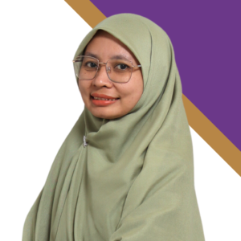

Direktur Mafatih Islamic School
Ibu Dr. Erma Pawitasari, S.Kom, M.Ed
ITS Surabaya (S1), Boston University USA (S2), Program 1000 Ulama DDII (S3). Ex-Guru Mutanafisun Academy USA, R&D Surya Institute, pengasuh rubrik Tabloid Suara Islam, Dosen IIQ Jakarta & UIKA Bogor, pengurus FORDISI, narasumber TVRI, Ijazah Tallaqy 30 Juz riwayat Hafsh urutan ke-31.
Kepala Sekolah
Ustazah Dian Herawaty, S.M
Alumnus IPB, asli kelahiran Pancoran Jakarta Selatan. Bergabung sejak tahun pertama, sebelumnya menjabat Kepala Tata Usaha, serta meraih ijazah sanad bacaan Al-Qur'an urutan ke-31.
Psikolog Sekolah
Ibu Siti M. Wasilah, M.Psi., Psikolog
Psikolog klinis pendidikan anak (bergabung TA 2023/2024). Juga praktik di RS Muhammadiyah Jakarta, Klinik Kancil Tebet, dan sekolah internasional di Jakarta Selatan.
Kepala Tata Usaha
Ustazah Duha R. Amanullah, S.Si
Alumnus Kimia UI, terampil mengelola administrasi & vendor, serta fasih berbahasa Inggris layaknya native speaker (pernah menetap di USA semasa kecil).
Guru Bahasa Inggris
Ust. M. Ashraf Janggam, S.Pd
Alumnus Pendidikan Bahasa Arab UNJ yang sangat fasih berbahasa Inggris sehingga siswa percaya diri dan semangat mempraktikkan percakapan bahasa asing.

Koordinator Literasi
Ustazah Frida Nurulia, S.S
Alumnus Sastra Inggris UNPAD (skor IELTS 7,5), eks-redaktur majalah anak Islami. Membimbing mading, cerpen, perpustakaan, hingga meraih skor Literasi 93,3 pada ANBK 2022.
Guru Science
Ustazah Yulianti, S.Pd
Alumnus Pendidikan Fisika UNJ (bergabung Januari 2022). Berkat bimbingan beliau, Mafatih Islamic School meraih skor sempurna 100 di bidang numerasi pada ANBK 2022.
Guru Bahasa Arab
Ust. M. Asadurrahman, S.Pd
Alumnus Pendidikan Agama Islam (PAI) IAI PERSIS Bandung dengan metode penyampaian Bahasa Arab yang terarah dan mudah dipahami siswa.
Guru Science & Admin
Ustadzah Shafa Annisa S., S.Si
Alumnus Kimia Universitas Indonesia (UI), eks-asisten laboratorium yang menciptakan praktikum sains yang aplikatif, aman, dan menyenangkan.
Guru Bimbingan Konseling
Ustazah Wenny Novita Hasibuan, S.Pd
Alumnus BK Universitas Negeri Medan, bergabung sejak Mafatih ISK berdiri tahun 2016; sabar, lembut, dan aktif sebagai pembicara publik.
Guru Umum
Ms. Ayu Rifka, S.Pd.I
Alumnus PGMI UIN Syarif Hidayatullah (bergabung TA 2023/2024), berpengalaman mengajar dari jenjang TK, SD, MA, hingga bimbingan belajar.
Asisten Guru (Tahfizh & B. Arab)
Ustazah Ma'rifah Nurul Hikmah
Mahasiswi jurusan Bahasa Arab LIPIA Jakarta, bergabung sejak TA 2023/2024 sebagai asisten guru Tahfizh dan Bahasa Arab.
Bagian Umum & Guru Olahraga
Ust. Fajar Nur Iman, SE
Alumnus STIE Trianandra Jakarta; mengajar archery (panahan) dan olahraga serta membantu administrasi sejak awal kelahiran Mafatih.
Bagian Kebersihan
Ust. Sukri, A.Md
Mengajar ekskul badminton dan futsal sejak TA 2021/2022, saat ini bertanggung jawab atas kebersihan lingkungan sekolah.